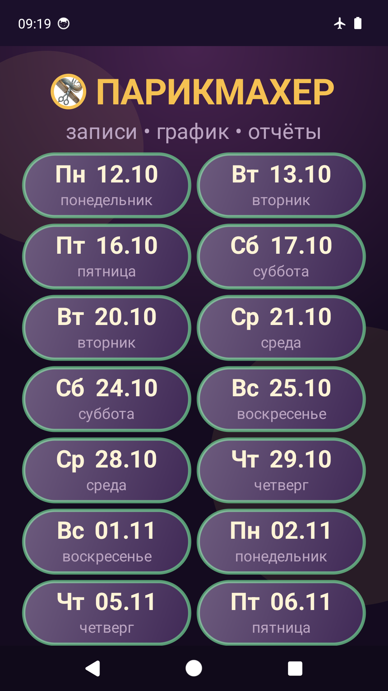
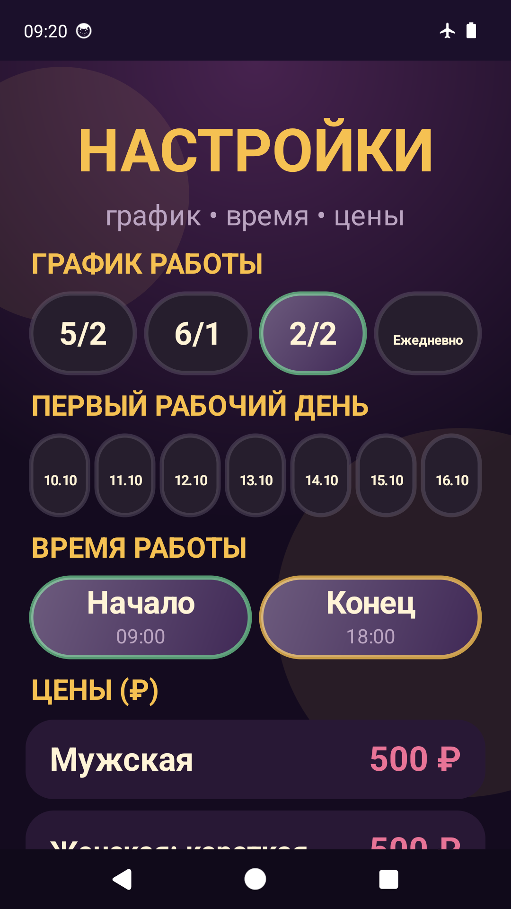
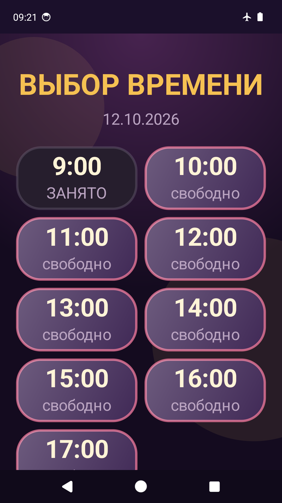
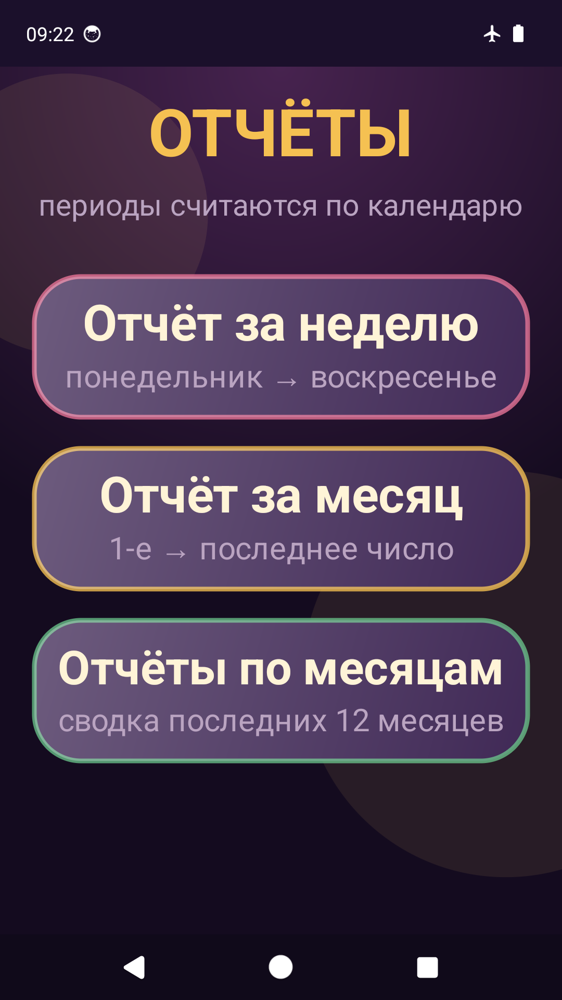

Приложение для мастера: запись клиента в три шага, гибкий график работы, цены на услуги, напоминания и понятные отчёты по выручке. Без регистрации и без интернета — все данные хранятся только на вашем устройстве.
- Android 8.0 и новее
- Версия 2.10
- ≈7 МБ
- Реклама РСЯ
Возможности
Запись клиента
Дата → свободное время → услуга. Занятые слоты подсвечиваются, перезапись невозможна, отмена — в один тап.
График работы
5/2, 6/1, 2/2 (два через два) или ежедневно. Первая рабочая дата выбирается из 7 дат, начиная с сегодняшней. Задаётся время начала и конца рабочего дня.
Длительность приёма
От 15 до 90 минут. Занятые слоты считаются с учётом длительности, поэтому свободных окон в день становится больше.
Изменение записей
Запись можно перенести на другое время, сменить услугу и цену или удалить — без пересоздания.
Виджеты на рабочем столе
Три варианта по ширине: узкий, средний и на всю ширину экрана. Показывают ближайшую смену, число записей, типы услуг и сумму; по нажатию открываются записи этого дня.
Ближайшее свободное время
Кнопка на главном экране сразу находит день со свободными окнами — не нужно перебирать даты вручную.
Цены на услуги
Шесть базовых услуг с редактируемыми ценами, окрашивание и химическая завивка — стоимость вводится при записи.
Отчёты
За неделю, за месяц и по месяцам: количество записей, список услуг, итоговая сумма, средний чек, самый загруженный день и самая частая услуга. Отчёт сохраняется в файл.
Напоминания
Уведомление о приближающейся записи вовремя — за 2 часа, вечером накануне или утром накануне. Восстанавливаются после перезагрузки телефона.
Экспорт и импорт
Все записи, отчёты и настройки сохраняются в файл и восстанавливаются обратно — удобно при смене устройства.
Работает офлайн
Интернет не нужен: база записей хранится на устройстве, персональные данные клиентов не сохраняются, облачный бэкап отключён.
Тёмная тема
Удобный интерфейс с золотым акцентом, рассчитанный на одноручное использование.
Экраны приложения




Важно знать
- Приложение не требует аккаунта, регистрации и доступа к контактам.
- В базе записей хранятся только дата, время, услуга и стоимость — имена и телефоны клиентов приложение не собирает.
- Данные не копируются в облачный бэкап: удаление приложения с телефона удаляет все записи и настройки.
- Внизу экранов показывается реклама Рекламной сети Яндекса — это единственный источник дохода от приложения.
- Исходный код приложения открыт: github.com/takomak2012-cyber/ParikmaherAndroid.